Kael · Gallant Blade
This card is the only pose list. A later frame has to match one of these keys. Native facing is right. The whole sprite flips. Both hands stay on the winged sword.
| Book | Value |
|---|---|
| Basic | Shard Volley · sword cut · the red shard is on the contact frame |
| Body | 805 health · 30 damage · 0.80 attacks/s · speed 3.1 · armor 6 · range 1.5 · mana 70 · regen 5 |
| Crit / cooldown | 0.20 crit · 0.86 cooldown scale |
| Cards | Might · Iron · Vampiric |
| Moves | Rend · Shield Wall · Squire's Charge |
| Stride | Close · he is a fist · 30s · cost 8 |
What stays off the body
- Shield Wall's red plate is the ground-ring shader. He does not grow a kite.
- Squire's Charge lands with the blink burst. The lunge is only his body.
- Rend's bleed is the hit spark on the foe, not paint on the sword.
Keys
Rest. Sword angled up in both hands. Cape down. This frame opens Shard Volley, Rend, Shield Wall, and Charge.
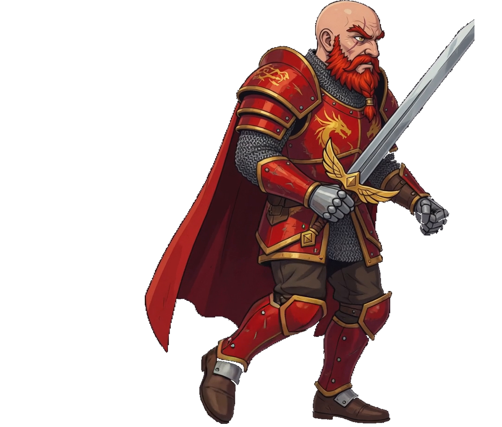
Contact. One boot reaches. The sword stays in both hands. The clip is kael-walk f00 through f07. These four keys are f00, f02, f04, and f06.
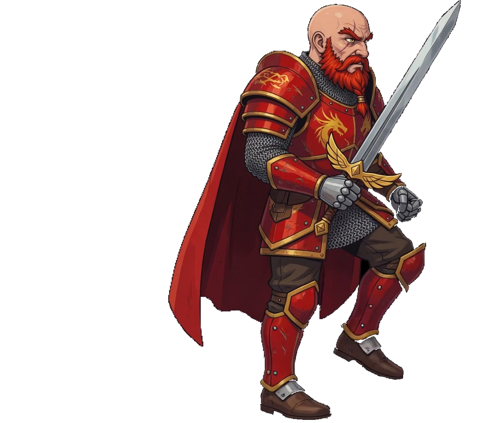
The rear boot swings through. The cape stays behind him.
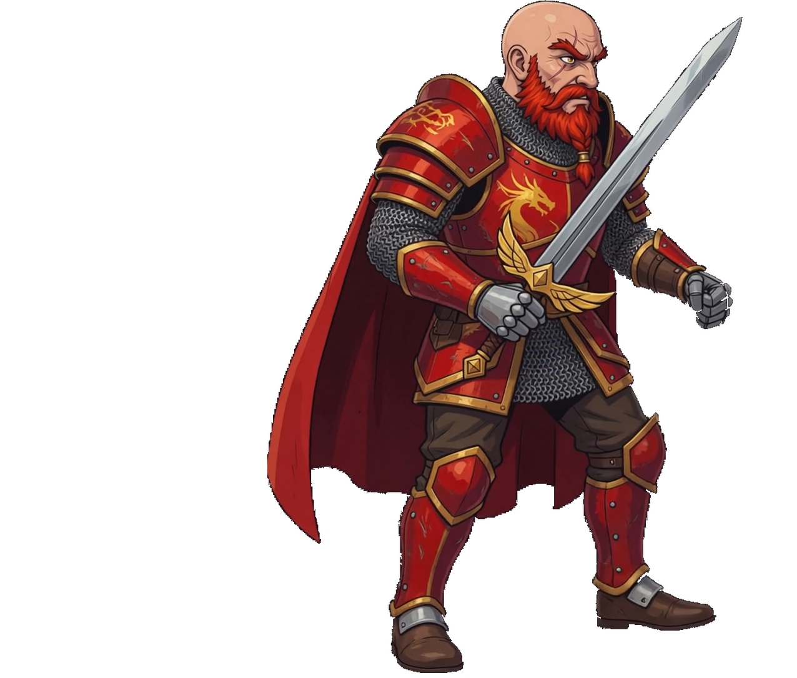
The other boot leads. Same height, same sword, same foot line as the idle.
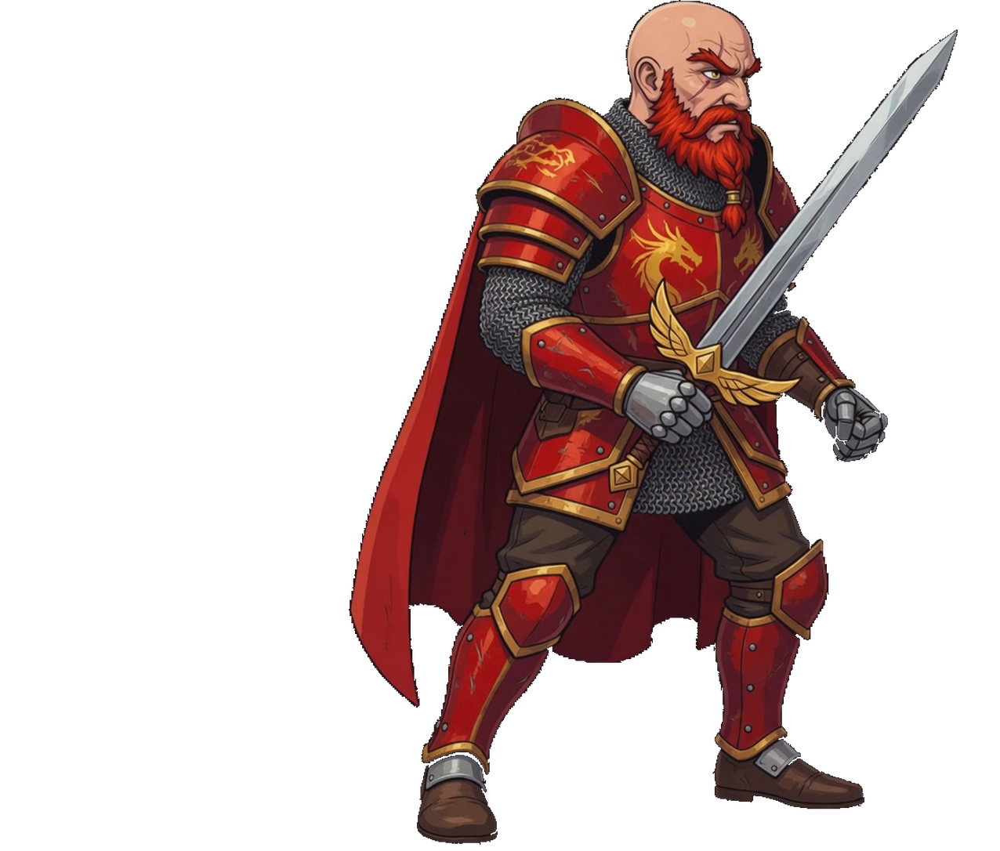
Passing back toward the first contact. The next frame is the loop.
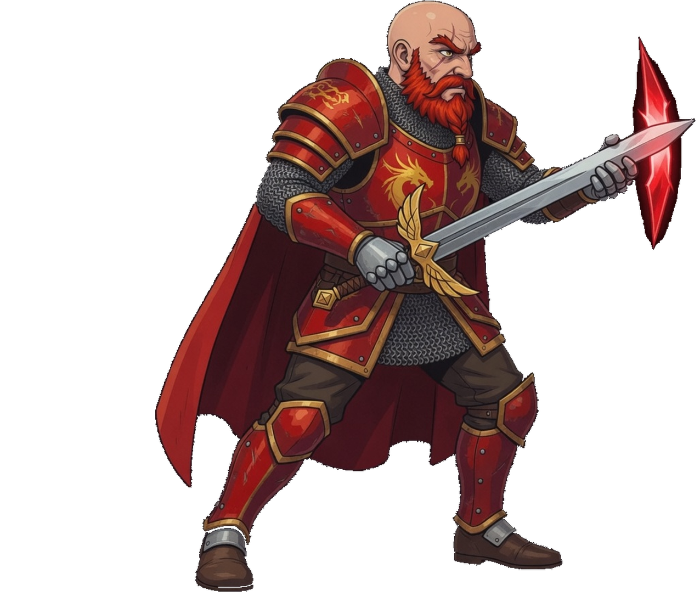
Cut. The sword is level and a red shard sits at the tip. Frame 1 and frame 3 are idle.
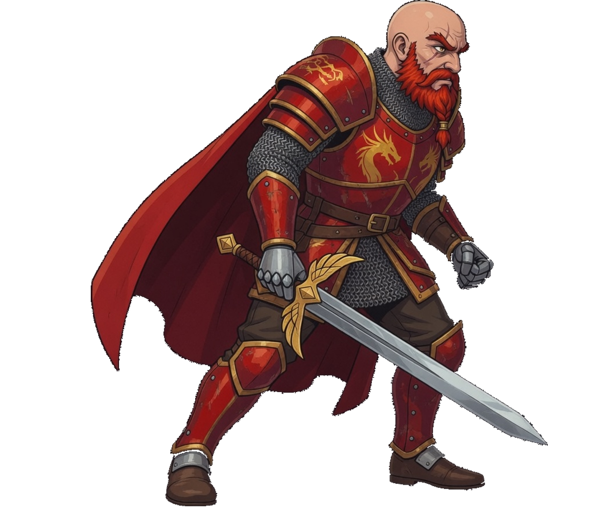
The heavy slash, blade low and forward. Frame 1 and frame 3 are idle.
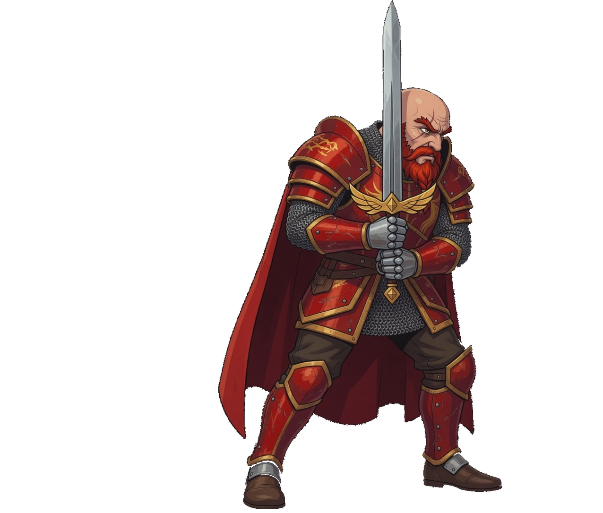
The sword is upright in front of the chest. The plate under his feet is the ring, not part of this sprite.
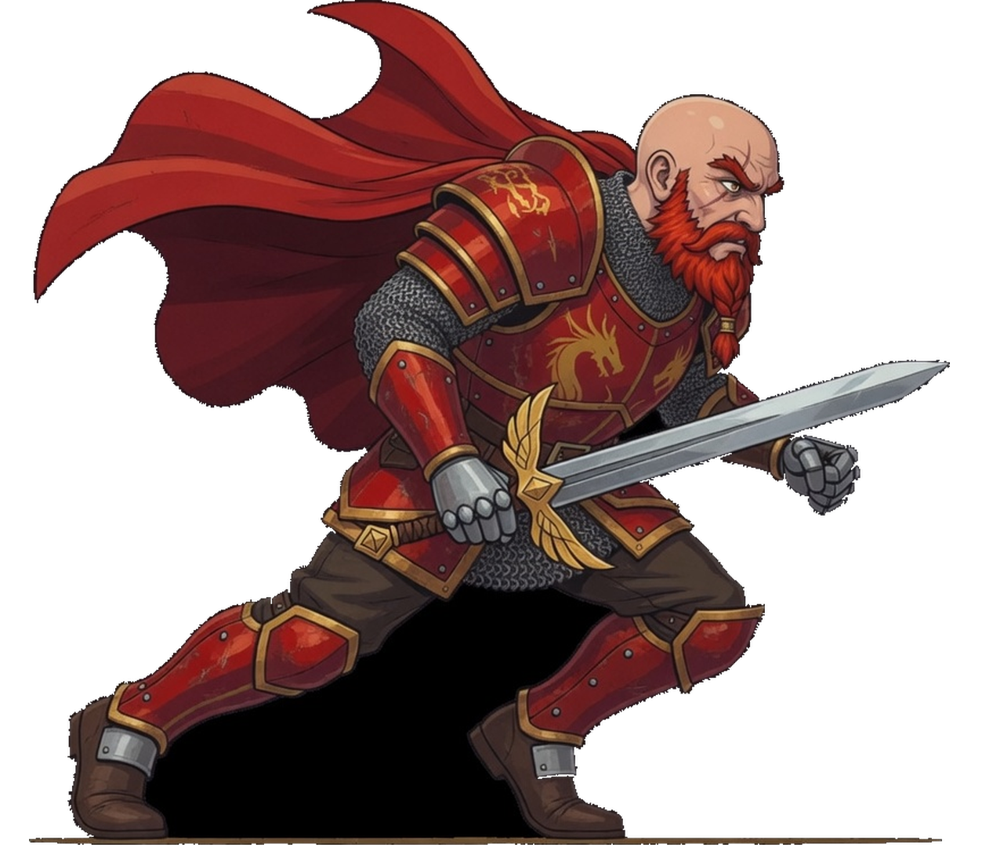
Lunge. Sword leads, rear boot back, cape thrown behind him.
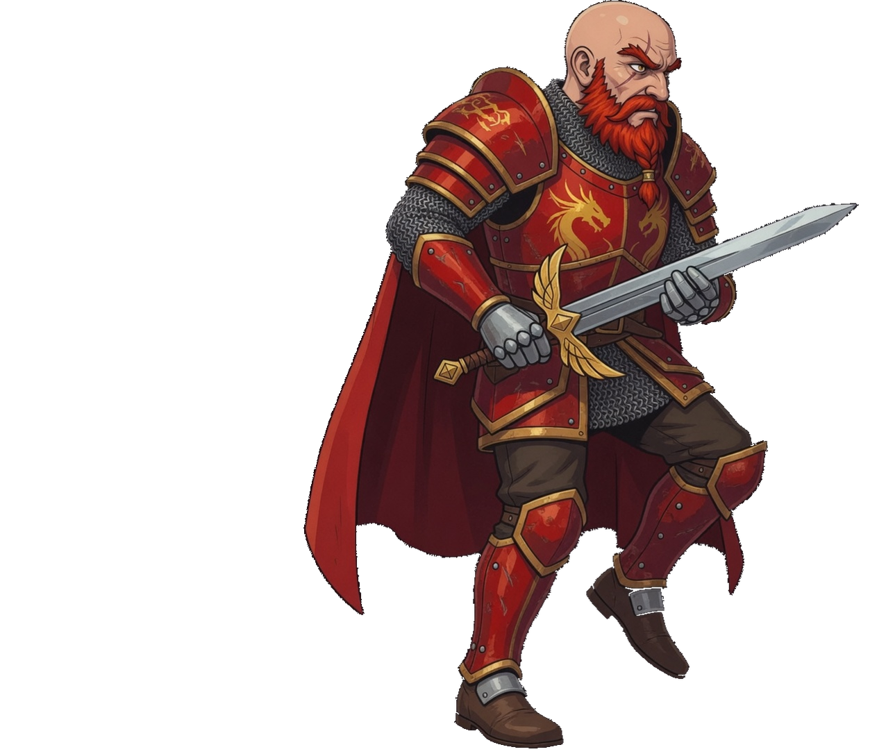
The step through. Front boot up, sword across the chest. Frame 2 is idle.
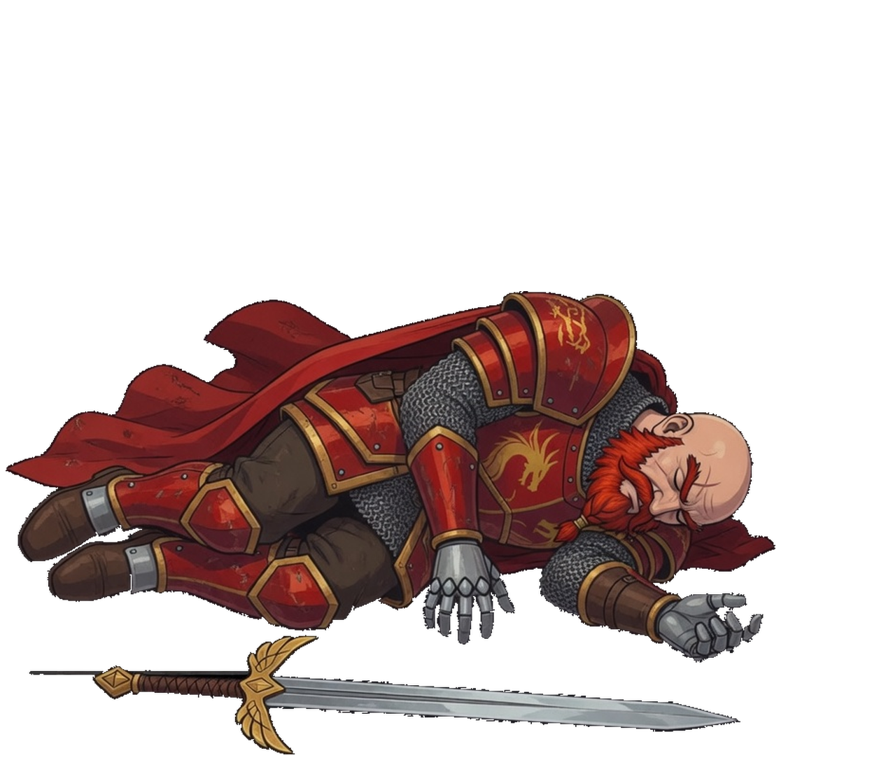
Down on his side, eyes closed, the winged sword on the ground in front of him. The clip holds this frame.
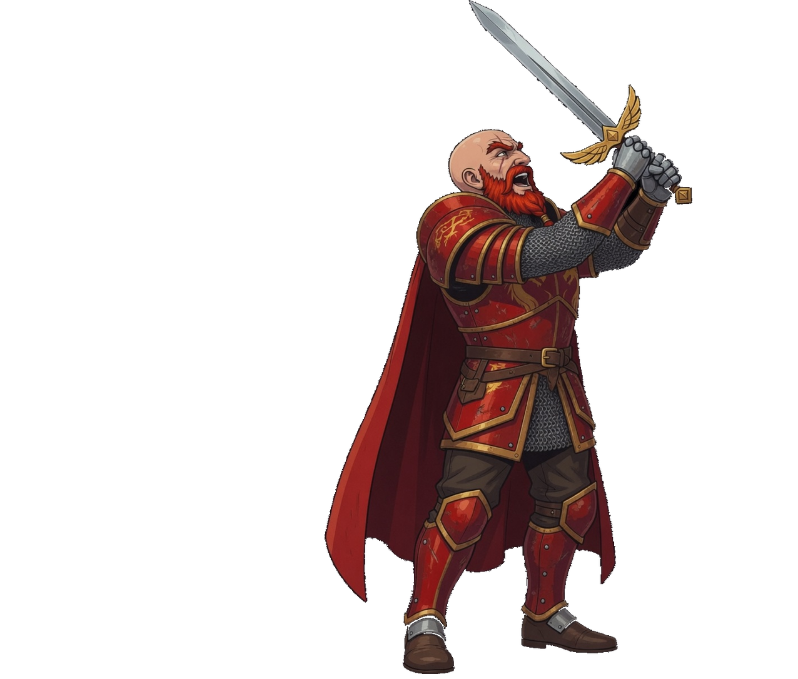
Chin up, sword overhead in both hands. This is not Shield Wall: the wall keeps the blade vertical in front of the beard.